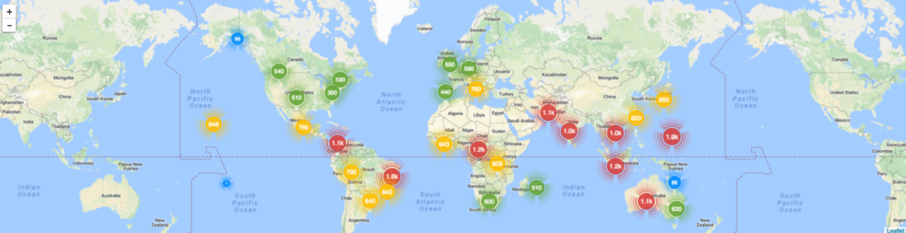

Flickr Perf Map
This dashboard shows each region and country’s various performance statistics, making it easy for one to find global patterns and know how each region is affected when problems occur, such as cable cuts that occur often in the Pacific. It uses a location approximation library that utilizes the ip address of each user activity report and, with it, groups incoming data by region and finds the median for each group per stat. Currently, the dashboard shows results for 30-minutes of data, but there is about a 20-25 minute delay.
And below the map is gauges for top five countries with most Flickr hits.
4: But wait, there’s more. Below the five gauges is a chart of top 15 countries with most hits by their AFT. Not this accounts for at least 80 percent of all users. Pretty colors, right? Splunk is pretty nice.